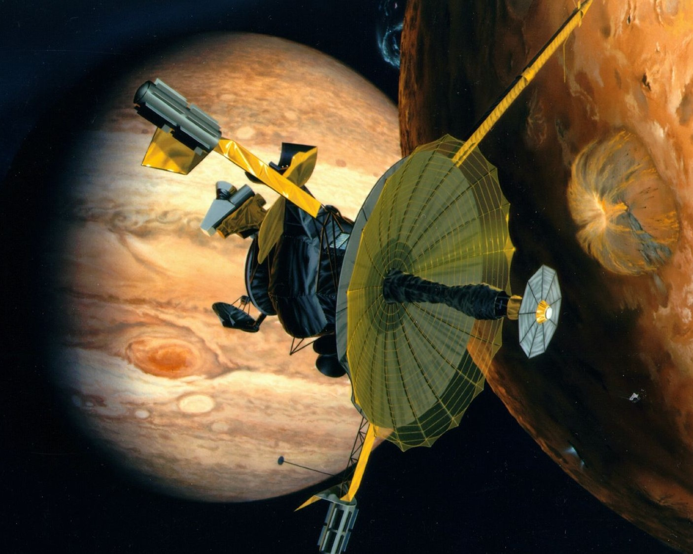
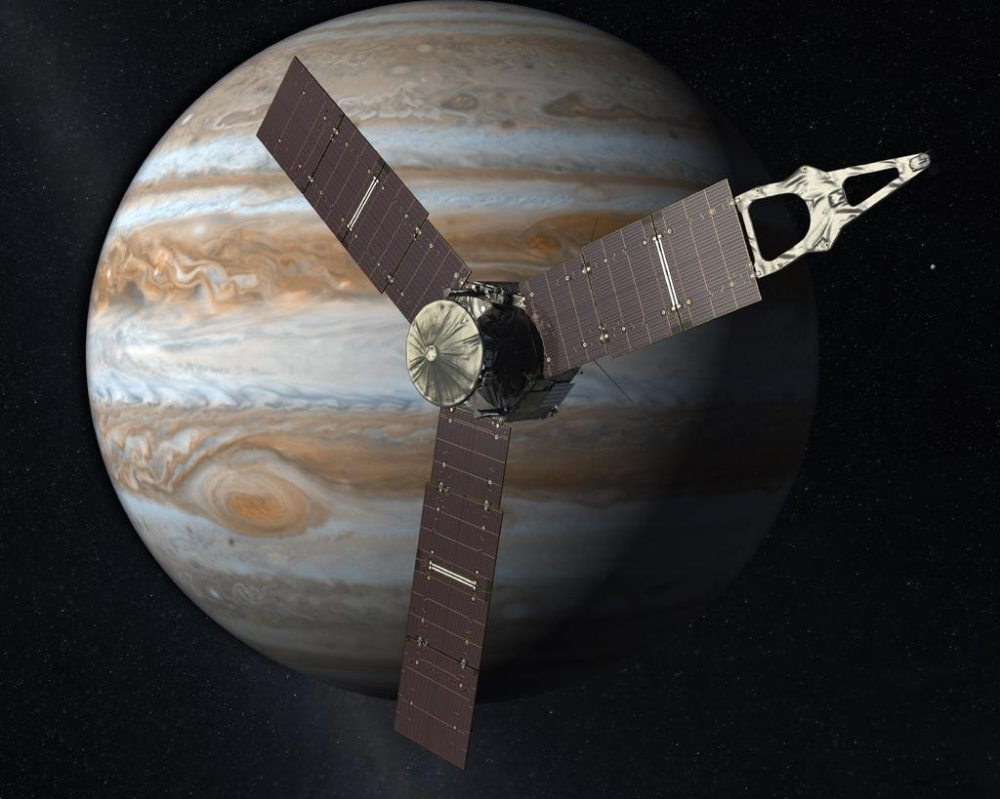
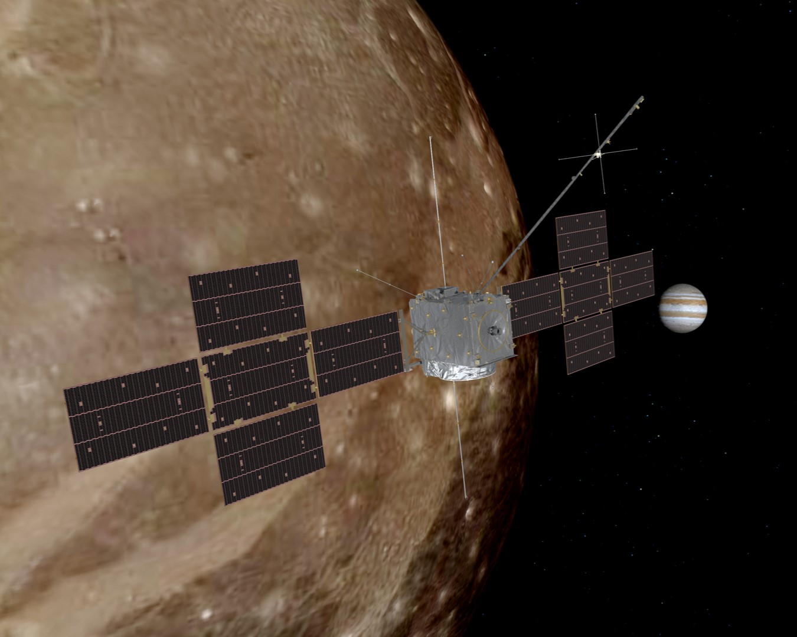
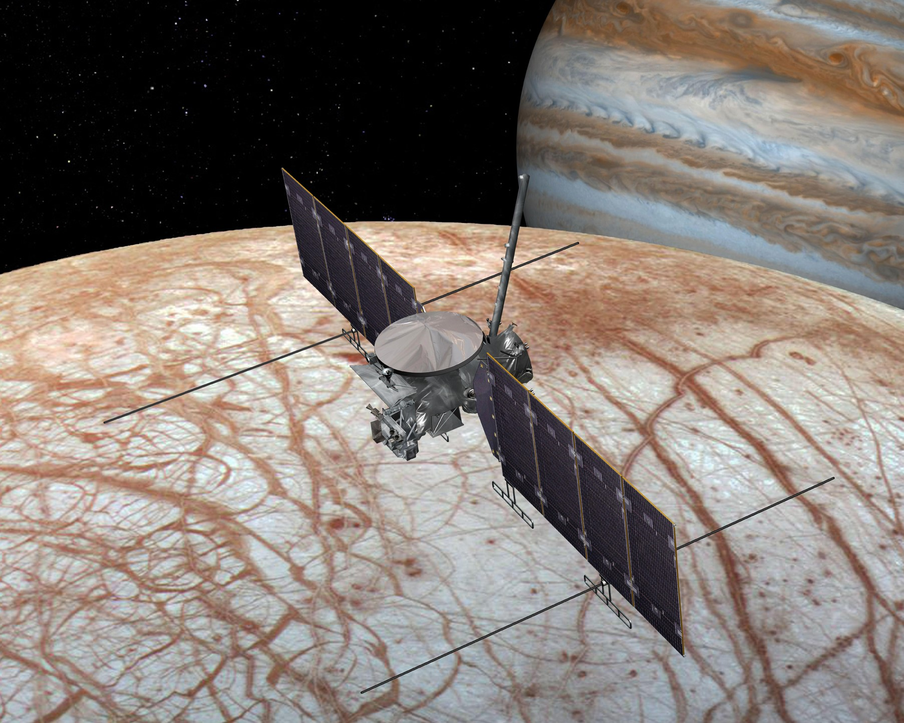
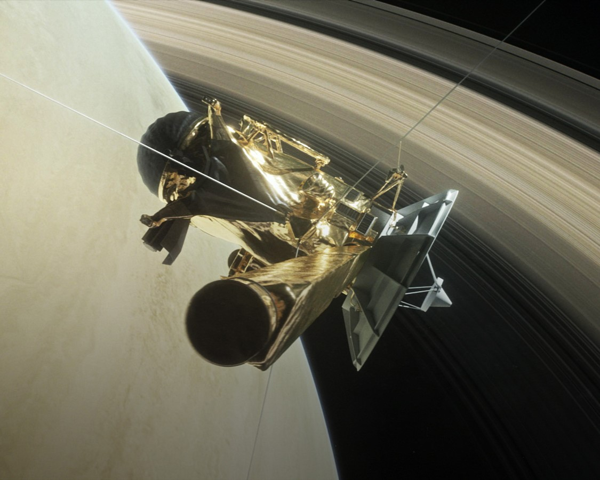

Jupiter
PIONEER 10 & 11
Début de Mission: 02 Mars 1972 (Pioneer 10) || 6 avril 1973 (Pioneer 11)
Fusée: Atlas Centaur
Localité: Cap Canaveral, USA
Fin de Mission: 23 Janvier 2003 (Pioneer 10) || 24 Novembre 1995 (Pioneer 11)
Status: Desactivées

Pioneer 10 a été lancée en 1972 et est devenue la première sonde à traverser la ceinture d’astéroïdes puis à effectuer un survol de la planète Jupiter en 1973. Deux ans plus tard, Pioneer 11 a également survolé Jupiter avant de poursuivre sa route vers Saturn, qu’elle a étudiée en 1979.
Les deux sondes ont transmis de nombreuses informations sur les champs magnétiques, les radiations et la structure de ces planètes géantes.
VOYAGER 1 & 2
Début de Mission: 05 septembre 1977 - Voyager 1 || 20 aout 1977 - Voyager 2
Fusée: Titan III
{kind=link}
Localité: Cap Canaveral, USA
Passage par Jupiter: 05 mars 1979 - Voyager 1 || 09 juillet 1979 - Voyager 2
Status: Opérationelles

Voyager 1 a survolé les planètes Jupiter en 1979 et Saturn en 1980, envoyant des images spectaculaires et découvrant de nouveaux détails sur leurs anneaux et leurs lunes. Voyager 2 a suivi une trajectoire plus longue : après Jupiter et Saturne, elle est devenue la seule sonde à visiter Uranus en 1986 puis Neptune en 1989.
Après ces survols, les deux sondes ont poursuivi leur voyage vers les confins du Système solaire.
GALILEO
Début de Mission: 18 octobre 1989
Fusée: Space Shuttle Atlantis
{kind=link}
Localité: Centre Spatial Kennedy, USA
Fin de Mission: 21 septembre 2003
Status: Détruite, déliberement percuté Jupiter

La mission a permis d’observer en détail l’atmosphère de Jupiter, ses anneaux et surtout ses principales lunes, comme Io, Europa, Ganymede et Callisto. Galileo a notamment découvert que certaines de ces lunes pourraient posséder des océans d’eau liquide sous leur surface glacée, en particulier Europa, ce qui en fait des endroits intéressants dans la recherche de vie extraterrestre.
Après près de huit ans d’exploration autour de Jupiter, la mission s’est terminée en 2003. Pour éviter toute contamination possible d’Europe, la sonde a été volontairement dirigée vers l’atmosphère de Jupiter, où elle s’est désintégrée sous l’effet de la chaleur et de la pression.
JUNO
Début de Mission: 5 août 2011
Fusée: Atlas V
Localité: Cap Canaveral, USA
Fin de Mission: ?
Status: Opérationelle

Grâce à ses instruments scientifiques et à sa caméra, Juno a fourni des images spectaculaires des nuages et des tempêtes de la planète, notamment de sa célèbre Great Red Spot. La mission a aussi permis de mieux comprendre la structure du noyau de Jupiter, la profondeur de ses bandes nuageuses et l’intensité de son champ magnétique.
Initialement prévue pour durer quelques années, la mission a été prolongée afin de continuer l’étude de la planète et de certaines de ses lunes. Juno est toujours active aujourd’hui et continue de transmettre des données précieuses sur la plus grande planète du Système solaire.
JUICE
Début de Mission: 14 avril 2023
Fusée: Ariane 5
{kind=link}
Localité: Centre Spatial de Kourou, Guyane Française
Fin de Mission: ?
Status: Opérationelle, en route

Après un long voyage dans le Système solaire avec plusieurs assistances gravitationnelles autour de planètes, la sonde devrait arriver près de Jupiter au début des années 2030. Elle effectuera alors de nombreux survols des lunes afin d’analyser leur surface, leur structure interne et leur environnement.
À la fin de la mission, JUICE devrait même se placer en orbite autour de Ganymède, la plus grande lune du Système solaire. Cette mission permettra de mieux comprendre ces mondes glacés et d’évaluer leur potentiel pour abriter des environnements favorables à la vie.
EUROPA CLIPPER
Début de Mission: 14 octobre 2024
Fusée: Falcon Heavy
{kind=link}
Localité: Centre Spatial Kennedy, USA
Fin de Mission: ?
Status: Opérationelle, en route

La sonde doit effectuer de nombreux survols rapprochés d’Europa afin d’étudier sa surface, sa composition et son environnement. Ses instruments scientifiques analyseront notamment l’épaisseur de la glace, la présence éventuelle de panaches d’eau et les interactions entre l’océan interne et la surface.
Après son lancement et un long voyage dans l’espace, la mission devrait arriver près de Jupiter dans les années 2030. Europa Clipper réalisera alors des dizaines de survols de la lune afin de collecter des données détaillées qui aideront les scientifiques à mieux comprendre ce monde océanique et son potentiel pour abriter la vie.
Saturne
PIONEER 11
Début de Mission: 6 avril 1973
Fusée: Atlas Centaur
{kind=link}
Localité: Cap Canaveral, USA
Passage par Saturne: 1 septembre 1979
Status: Desactivé
La mission a permis de mieux comprendre la structure des anneaux de Saturne, révélant qu’ils sont composés de nombreuses bandes plus fines et complexes qu’on ne le pensait. La sonde a également découvert un nouvel anneau très mince autour de la planète et a mesuré l’intensité de son champ magnétique ainsi que la présence d’une ceinture de radiations.
Les observations de Pioneer 11 ont aussi fourni des données importantes sur certaines lunes de Saturne, notamment Titan. Toutes ces découvertes ont permis de préparer les missions suivantes vers Saturne et d’améliorer considérablement notre compréhension de cette planète géante et de son environnement.
VOYAGER 1 & 2
Début de Mission: 5 septembre 1977 - Voyager 1 || 20 août 1977 - Voyager 2
Fusée: Titan IIIE
{kind=link}
Localité: Cap Canaveral, USA
Passage par Saturne : 12 novembre 1980 - Voyager 1 || 25 août 1981 - Voyager 2
Status: Opérationelles
Ces missions ont permis de révéler la structure complexe des anneaux de Saturne, composés de milliers de bandes fines formées de glace et de roches. Les sondes ont également découvert plusieurs nouvelles lunes et étudié l’atmosphère de la planète ainsi que son puissant champ magnétique.
Le survol de la lune Titan par Voyager 1 a été particulièrement important : la sonde a confirmé que cette lune possède une atmosphère dense, composée principalement d’azote. Après ce passage, Voyager 1 a quitté le plan des planètes pour poursuivre sa route vers l’espace interstellaire, tandis que Voyager 2 a continué son voyage vers Uranus puis Neptune.
CASSINI
Début de Mission: 15 octobre 1997
Fusée: Titan IV
{kind=link}
Localité: Cap Canaveral, USA
Fin de Mission: 15 septembre 2017
Status: Détruite, déliberement percuté Saturne

Cassini transportait le module Huygens, conçu pour se poser sur la lune Titan. En janvier 2005, Huygens a réalisé l’atterrissage historique sur Titan, envoyant vers la Terre des images inédites de sa surface et analysant son atmosphère. Le module a révélé des paysages de dunes de sable d’hydrocarbures, des rivières et des lacs de méthane et d’éthane, offrant un aperçu unique de ce monde extraterrestre fascinant.
Pendant la mission, Cassini a continué à étudier les anneaux et d’autres lunes de Saturne, notamment Enceladus, où elle a détecté des geysers d’eau et de glace suggérant la présence d’un océan souterrain. Après plus de treize ans autour de Saturne, la mission s’est achevée en 2017 lors du « Grand Finale », lorsque Cassini a été volontairement plongée dans l’atmosphère de la planète pour éviter toute contamination des lunes potentiellement habitables.
Uranus
VOYAGER 2
Début de Mission: 20 août 1977
Fusée: Titan IIIE
Localité: Cap Canaveral, USA
Passage par Uranus: 24 janvier 1986
Status: Opérationelle

La mission a révélé que l’atmosphère d’Uranus est principalement composée d’hydrogène et d’hélium, avec des traces de méthane qui lui donnent sa couleur bleue caractéristique. Voyager 2 a également découvert 10 nouvelles lunes et deux anneaux étroits et sombres, confirmant que le système uranien est plus complexe qu’on ne le pensait. La sonde a mesuré un champ magnétique fortement incliné et décalé par rapport à l’axe de rotation de la planète, une caractéristique unique parmi les planètes géantes du Système solaire.
Ces observations ont permis de mieux comprendre la composition, la structure et la dynamique d’Uranus, ouvrant la voie à de futures missions vers les planètes glacées. Voyager 2 a ensuite poursuivi sa route vers Neptune, continuant son exploration historique du Système solaire extérieur.
Neptune
VOYAGER 2
Début de Mission: 20 août 1977
Fusée: Titan IIIE
Localité: Cap Canaveral, USA
Passage par Neptune: 25 août 1989
Status: Opérationelle
Voyager 2 a découvert de violentes tempêtes, dont la célèbre Great Dark Spot, ainsi que des vents parmi les plus rapides du Système solaire, atteignant plus de 2 000 km/h. La sonde a révélé de nouveaux anneaux étroits et plusieurs lunes jusque-là inconnues, en particulier Triton, qui présente un relief géologiquement actif avec des geysers cryovolcaniques projetant de l’azote gelé.
Ces découvertes ont permis de mieux comprendre la dynamique des planètes glacées, la composition de leur atmosphère et l’activité géologique de leurs lunes. Après ce survol historique, Voyager 2 a quitté le plan des planètes et poursuit aujourd’hui son voyage dans l’espace interstellaire, devenant le seul engin à avoir exploré Neptune de près.
Pluton
NEW HORIZONS
Début de Mission: 19 janvier 2006
Fusée: Atlas V
{kind=link}
Localité: Cap Canaveral, USA
Passage par Pluton: 14 juillet 2015
Status: Opérationelle

New Horizons a révélé un monde étonnamment varié : des montagnes de glace, des plaines gelées et des régions riches en composés organiques. La sonde a également étudié l’atmosphère fine de Pluton et ses lunes, dont Charon, en découvrant des reliefs, des crevasses et des indices sur son passé géologique.
Après Pluton, New Horizons a poursuivi sa route vers la ceinture de Kuiper et a survolé l’objet Arrokoth en janvier 2019, fournissant des informations uniques sur la formation des planètes et des petits corps glacés du Système solaire. La mission continue aujourd’hui à collecter des données sur des objets lointains, enrichissant notre compréhension des confins glacés du Système solaire.